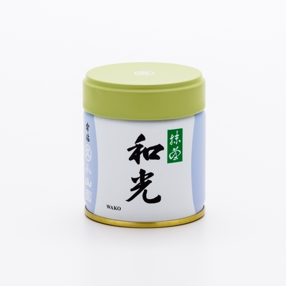
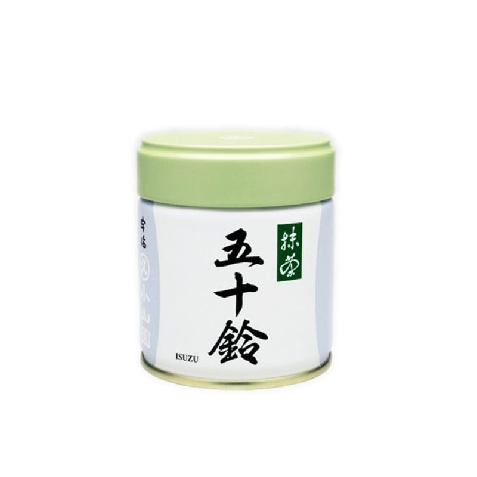

零基礎入門導覽 · LLM Wiki 知識轉化
從零認識日本抹茶：
從零認識日本抹茶：
製程原理、選茶等級與手刷入門
這份簡報將帶你用 3 分鐘破除「抹茶＝綠茶粉」的迷思，看懂丸久小山園的茶款等級光譜，並掌握在家手刷出一碗綿密抹茶的黃金參數。
01. 認識本質
了解覆下栽培與石臼研磨如何創造鮮甜（Umami）與翠綠色澤。
02. 精準選茶
區分濃茶、薄茶與烘焙用等級，不再買錯茶款或浪費高階茶粉。
03. 手刷實戰
學會 80°C 水溫控制、W/M 字擊拂與「の」字消泡收尾技巧。
知識庫來源：全篇整合自 LLM Wiki（Wiki-01 至 Wiki-06）
第 1 / 7 頁
單元一 · 基礎定義與製程
破除迷思：為什麼「抹茶」不等於「一般綠茶粉」？
正統日本抹茶必須經過「採前遮光（覆下栽培）」、「蒸青不揉捻（碾茶）」與「花崗岩石臼低速研磨」三道工藝。
| 比較維度 | 正統日本抹茶（Matcha） | 一般綠茶粉（Green Tea Powder） |
|---|---|---|
| 栽培方式 | 採收前 20～30 天搭棚遮光，保留大量茶氨酸（鮮甜） | 全日照露天栽培，茶氨酸轉化為苦澀的兒茶素 |
| 原料與研磨 | 去梗去脈的「碾茶」，以石臼低速研磨（每小時僅 30～40g） | 經揉捻的煎茶或番茶，以高速機械粉碎（易高溫氧化） |
| 茶湯表現 | 色澤鮮豔翠綠、鮮甜回甘、起泡細緻綿密 | 色澤偏暗黃綠、苦澀感強烈、易沉澱結塊 |
對應知識庫條目：Wiki-01 什麼是抹茶？製程工藝與風味原理
第 2 / 7 頁
單元二 · 等級分類邏輯
挑茶第一步：先決定你要「純飲」還是「做甜點拿鐵」
抹茶並非越貴越好！高階茶苦澀極低，若拿來加牛奶或高溫烘烤，茶味反而會被完全蓋過。
1. 濃茶（Koicha）
- 定位：最高等級嫩芽製成。
- 風味：苦澀極低、鮮甜與回甘深邃。
- 喝法：粉多水少（如融化巧克力般濃稠），僅適合正式茶會純飲。
2. 薄茶（Usucha）
- 定位：日常茶道與入門純飲。
- 風味：兼具鮮味與清爽微苦感，起泡性佳。
- 喝法：約 2g 茶粉配 60～70ml 溫水手刷；高階薄茶亦可做無糖拿鐵。
3. 食品烘焙用（Culinary）
- 定位：專為乳製品與高溫烘焙設計。
- 風味：茶味厚重、苦澀度較高。
- 用途：與糖、牛奶結合或高溫烘烤後，依然能保留鮮綠茶色與茶香。
對應知識庫條目：Wiki-02 抹茶等級分類總覽與雙軸光譜
第 3 / 7 頁
單元三 · 經典品牌實例（點擊茶款向右展開風味評測）
丸久小山園全系列圖鑑（左側點選茶款，右側查看苦澀／旨味）
對應知識庫條目：Wiki-03 濃茶、Wiki-04 薄茶、Wiki-05 食品烘焙篇
第 4 / 7 頁
互動實驗室 · 情境選茶推薦器
不知道買哪一款？點選你的使用情境
點擊下方按鈕，系統將根據 LLM Wiki 中的茶款參數為你推薦最適合的丸久小山園茶款：


推薦首選：【和光（Wakō）】或【五十鈴（Isuzu）】
• 和光：薄茶最高階，苦澀味極低、帶有清幽花香與圓潤甘甜，是零基礎純飲最不容易踩雷的入門首選。
• 五十鈴：傳統石臼研磨，海苔香氣與甜感鮮明，純飲或偶爾加牛奶做高階拿鐵都很出色。
• 和光：薄茶最高階，苦澀味極低、帶有清幽花香與圓潤甘甜，是零基礎純飲最不容易踩雷的入門首選。
• 五十鈴：傳統石臼研磨，海苔香氣與甜感鮮明，純飲或偶爾加牛奶做高階拿鐵都很出色。
對應知識庫條目：Wiki-04 日常薄茶 & Wiki-05 食品烘焙篇
第 5 / 7 頁
單元四 · 手刷實作指南
在家刷出綿密泡沫：黃金參數與三步驟
🛠️ 必備器具與黃金比例
- 茶篩（必備）：抹茶粉極易因靜電結塊，沖泡前務必過篩。
- 茶筅選擇：純飲建議用竹製 100 本立（穗數多、易打出細沫）；常刷拿鐵或怕發黴可選樹脂茶筅。
- 黃金比例：2g 抹茶粉（約 2 茶杓）＋ 60～70ml 的 80°C 溫熱水（水溫過高會逼出苦澀）。
🍵 手刷三步驟口訣
- Step 1 溫碗過篩：熱水溫碗後擦乾，將 2g 抹茶粉過篩入碗。
- Step 2 W / M 字快速擊拂：倒入 80°C 熱水，手腕放鬆讓茶筅貼近碗底，以 W 或 M 字型快速前後刷動 15～20 秒。
- Step 3 「の」字消泡收尾：表面起泡後，將茶筅微提至表層輕畫一個「の」字撫平大氣泡，從中心提起即完成。
對應知識庫條目：Wiki-06 手刷抹茶標準器具與沖泡參數指南
第 6 / 7 頁
單元五 · 學習驗收
隨堂小測驗：測試你是否掌握了抹茶知識！
問題：小華想在家製作需要高溫烘烤的「抹茶磅蛋糕」，並希望烤完後依然保持鮮豔翠綠色，請問他應該選擇哪一款丸久小山園抹茶最合適？
請點擊上方選項作答，確認你是否理解「用途對應等級」的核心觀念！